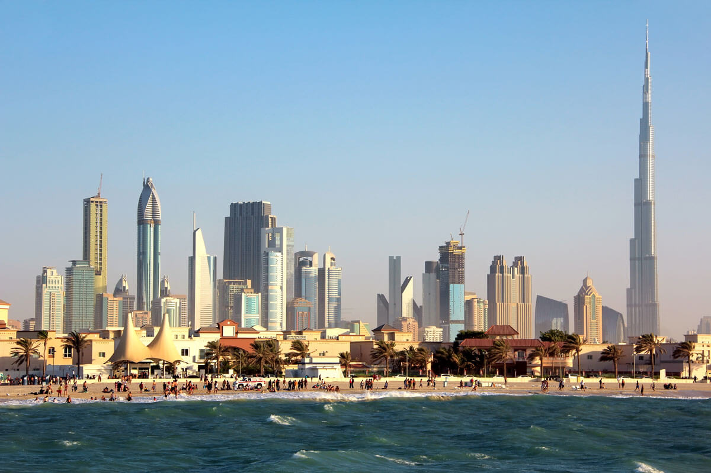
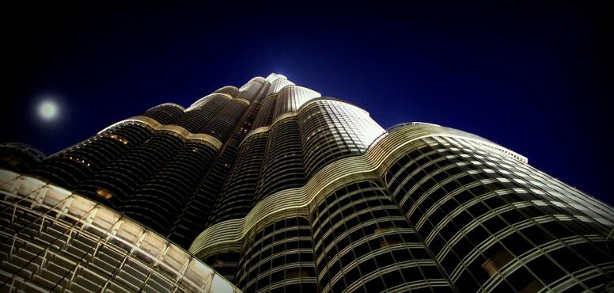
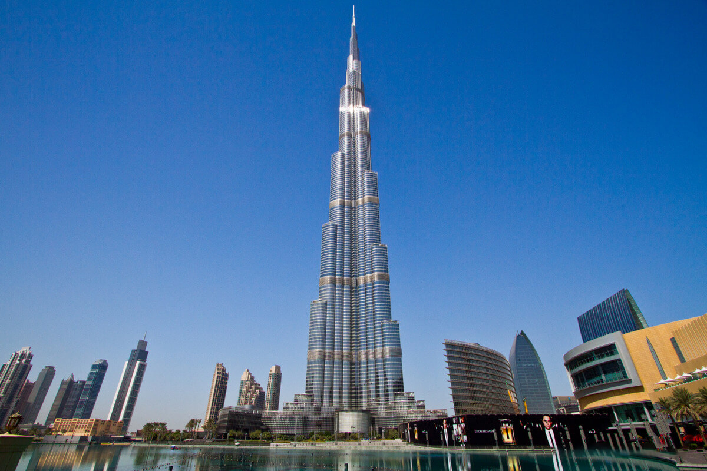
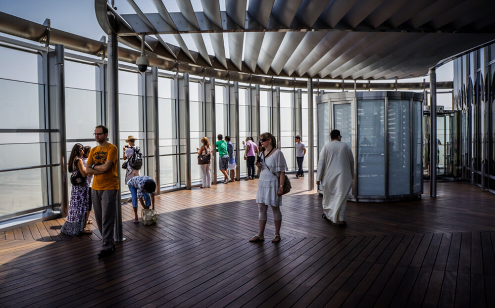
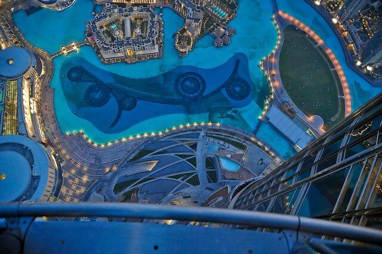
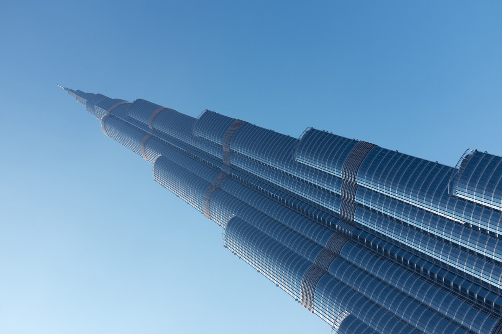

Бурдж-Халифа — самое высокое здание в мире! Высота небоскреба, расположенного в Дубае, — 828 метров, это 163 этажа. Его форма напоминает сталагмит, хотя для создателей вдохновением стал образ цветка гименокаллиса, произрастающего в пустыне ОАЭ, с его идеальными пропорциями. Торжественная церемония открытия состоялась 4 января 2010 года.

Башня Халифы (именно так переводится название) выросла в самом сердце мегаполиса Dubai Downtown, по соседству с крупнейшим в мире торговым центром The Dubai Mall.
Строительство самого высокого здания планеты велось под руководством главного архитектора американца Адриана Смита с 2004 по 2010 годы, а общая стоимость затрат на реализацию проекта составила 1,5 миллиарда долларов США.

Первоначальная высота здания предполагалась 705 м, чего было бы достаточно для получения статуса высочайшего здания на планете. Однако вплоть до самого официального открытия 4 января 2010 года окончательная высота была окутана тайной и только догадками. Лишь на церемонии общественности сообщили о том, что верхняя точка находится на высоте 828 м, а общее количество этажей – 163. Как позже стало известно, именно правитель Дубая и Премьер-министр ОАЭ Его величество шейх Мохаммед-бин-Рашид-аль-Мактум (Mohammad bin Rashid al Maktoum) предложил застройщику – компании Emaar исходные размеры, которые в результате и были утверждены.
Пилотным названием проекта было Бурдж-Дубай (Burj-Dubai), однако, в последствии его нарекли именем президента Объединенных Арабских Эмиратов шейха Халифы-бин-Зайеда-аль-Нахайана (Khalifa bin Zayed al Nahayan).

Сегодня в пределах Бурдж Халифа находятся: элитный жилой комплекс, гостиница Armani, ряд торговых и офисных центров, рестораны, смотровые площадки и обсерватория, а также искусственное озеро с фонтаном у основания. Венчает это великолепие 180-метровый шпиль.
Самая высокая смотровая площадка Бурдж-Халифа находится на 148-м этаже на высоте 555 метров. Еще две площадки расположены на 124-м (472 метра) и 125-м этажах.

Воздух внутри здания не только охлаждается, но и ароматизируется благодаря специальным мембранам. Этот аромат был создан специально для Бурдж-Халифа. Стёкла не пропускают пыль и отталкивают солнечные лучи, позволяя поддерживать оптимальную температуру в здании, к тому же их ежедневно моют. Специально для Бурдж-Халифа была разработана особая марка бетона, который выдерживает температуру до +50 °C. Бетонную смесь укладывали только ночью, а в раствор добавляли лёд.
В здании установлено 57 лифтов. При этом только служебный лифт поднимается с первого этажа на последний. Жильцы и посетители небоскрёба перемещаются между этажами с пересадками. Лифты Бурдж-Халифа развивают скорость до 10 м/с.
У подножья небоскрёба в искусственном озере находится музыкальный фонтан Дубай. Его освещают 6600 источников света и 50 цветных прожекторов. Длина фонтана — 275 м, а высота струй достигает 150 метров. Фонтан имеет музыкальное сопровождение.
С обзорной площадки открывается завораживающий вид на фонтан.

Электричеством башня себя обеспечивает самостоятельно. На фасаде здания установлены солнечные батареи, и огромная турбина, вращающаяся от порывов ветра. Длина этой турбины – более 60 метров.
Строительство небоскрёба началось в 2004 году и шло со скоростью 1-2 этажа в неделю. Ежедневно на строительстве было задействовано до 12 000 рабочих. На создание башни ушло около 320 тысяч квадратных метров бетона и более 60 тысяч тонн стальной арматуры.
Башня вмещает около 900 квартир, отель на 304 номера, 35 этажей отдано под офисы. В трех подземных этажах располагается парковка на 3000 автомобилей.
Общая площадь наружной поверхности приблизительно равна 17 футбольным полям. Ежедневно и непрерывно осуществляется мойка наружного стекла небоскреба, но для того чтобы помыть его полностью требуется около трех месяцев.

ВВЕРХ